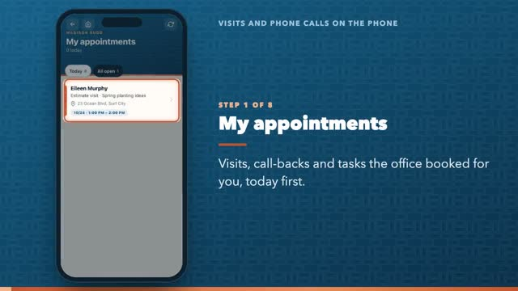
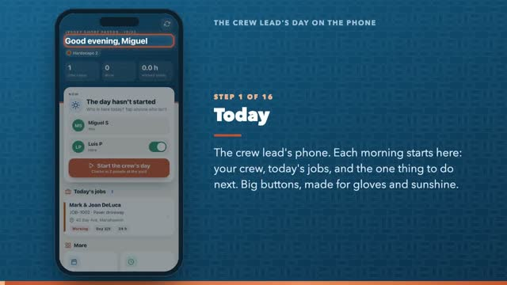
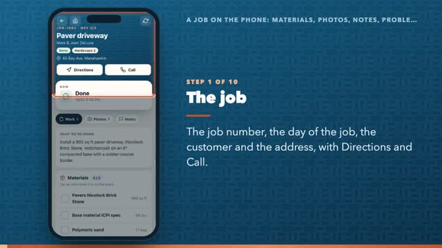
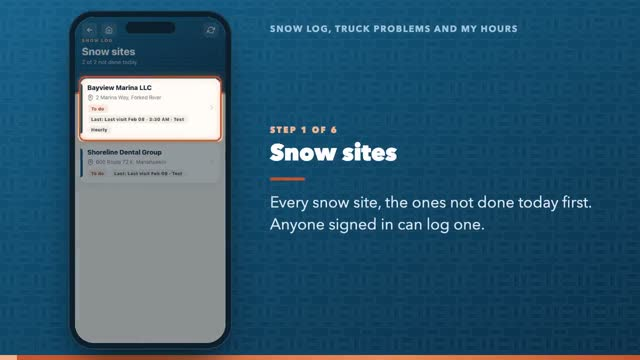
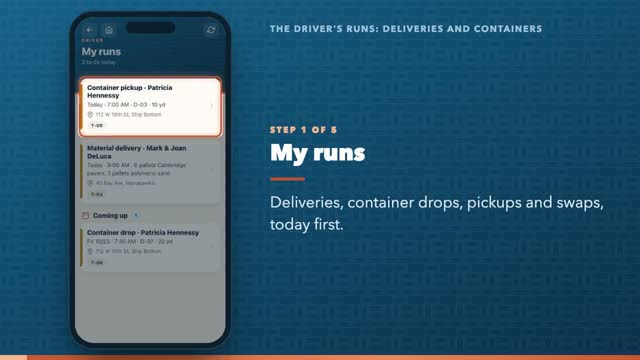

Guide / Crew phone app
Crew phone app
The crew lead's day, a job, visits and calls, the driver's runs, snow and hours: on the phone.
How to

0:56 Visits and phone calls on the phone8 steps Phone
1:56 The crew lead's day on the phone16 steps Phone
1:12 A job on the phone: materials, photos, notes, problems10 steps Phone
0:48 Snow log, truck problems and my hours6 steps Phone
0:34 The driver's runs: deliveries and containers5 steps Phone